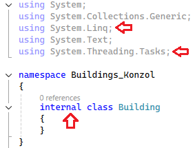
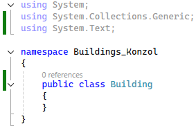

Building.cs alapbeállítás
Töröljünk ki két névteret. A
System.Linq
-t és a
System.Threading.Tasks
-t.

Változtassuk meg az osztály láthatóságát
internal
-ról
public
-ra. Ez majd a
winform
-os résznél lesz fontos.
